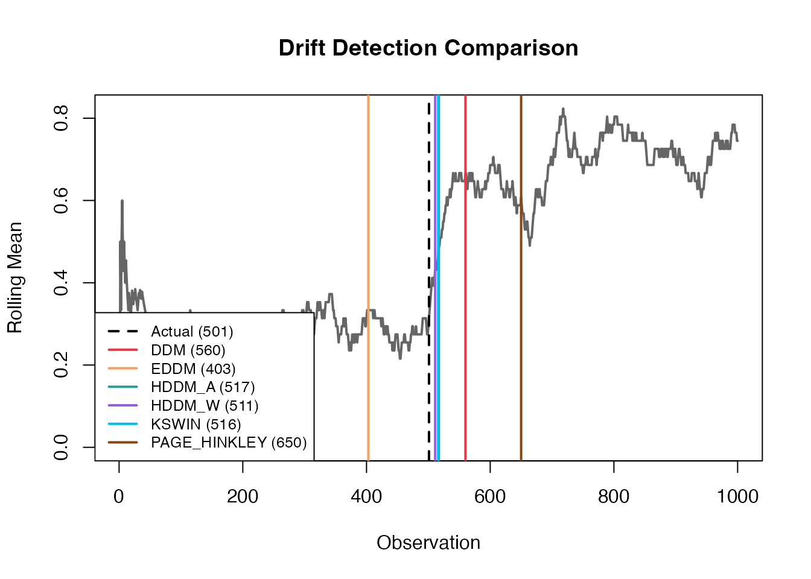
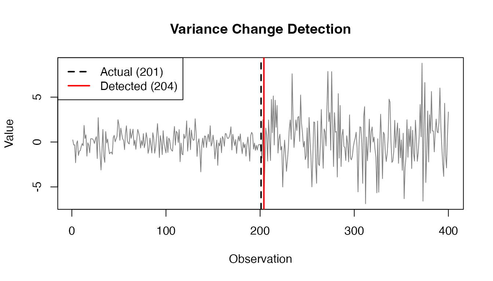

What is Data Drift?
Data drift occurs when the statistical properties of data change over time. This is critical in machine learning systems where models may degrade as data patterns shift.
Available Methods
datadriftR provides 8 drift detection methods:
| Method | Best For | Key Advantage |
|---|---|---|
| DDM | Binary error streams | Simple and fast |
| EDDM | Binary error streams | Earlier detection than DDM |
| HDDM-A | Binary streams | Theoretical guarantees |
| HDDM-W | Binary streams | Memory efficient |
| KSWIN | Any numeric data | Distribution comparison |
| Page-Hinkley | Continuous data | Detects mean changes |
| KL-Divergence | Continuous data | Information-theoretic |
| Profile Difference | PDP comparison | Detects model behavior changes |
Quick Start: Using detect_drift()
The simplest way to detect drift - process entire stream at once:
library(datadriftR)
set.seed(123)
n_stable <- 500
n_drift <- 500
stream <- c(
sample(c(0, 1), n_stable, replace = TRUE, prob = c(0.7, 0.3)),
sample(c(0, 1), n_drift, replace = TRUE, prob = c(0.3, 0.7))
)
drift_point <- n_stable + 1
results <- detect_drift(stream, method = "ddm", include_warnings = FALSE)
head(results, 3)
#> index value type
#> 1 560 1 driftAll Methods Comparison
methods <- c("ddm", "eddm", "hddm_a", "hddm_w", "kswin", "page_hinkley")
comparison <- do.call(rbind, lapply(methods, function(m) {
res <- detect_drift(stream, method = m, include_warnings = FALSE)
data.frame(
Method = toupper(m),
Detections = nrow(res),
First = if (nrow(res) > 0) min(res$index) else NA
)
}))
comparison
#> Method Detections First
#> 1 DDM 1 560
#> 2 EDDM 3 403
#> 3 HDDM_A 1 517
#> 4 HDDM_W 1 511
#> 5 KSWIN 2 516
#> 6 PAGE_HINKLEY 1 650
roll_mean <- sapply(seq_along(stream), function(i) mean(stream[max(1,i-50):i]))
plot(roll_mean, type = "l", col = "gray40", lwd = 2,
xlab = "Observation", ylab = "Rolling Mean",
main = "Drift Detection Comparison")
abline(v = drift_point, col = "black", lty = 2, lwd = 2)
colors <- c("#E63946", "#F4A261", "#2A9D8F", "#9B5DE5", "#00BBF9", "#8B4513")
for (i in seq_len(nrow(comparison))) {
if (!is.na(comparison$First[i])) {
abline(v = comparison$First[i], col = colors[i], lwd = 2)
}
}
legend("bottomleft",
legend = c(paste0("Actual (", drift_point, ")"),
paste0(comparison$Method, " (", comparison$First, ")")),
col = c("black", colors),
lty = c(2, rep(1, 6)), lwd = 2, cex = 0.8, bg = "white")
Detection points by method
Online Learning: Streaming with For Loop
For real-time applications, process observations one by one:
ddm <- DDM$new()
for (i in seq_along(stream)) {
ddm$add_element(stream[i])
if (ddm$change_detected) {
cat("DDM detected drift at index:", i, "\n")
ddm$reset()
}
}
#> DDM detected drift at index: 560
kswin <- KSWIN$new(alpha = 0.005, window_size = 100)
for (i in seq_along(stream)) {
kswin$add_element(stream[i])
if (kswin$detected_change()) {
cat("KSWIN detected drift at index:", i, "\n")
}
}
#> KSWIN detected drift at index: 518
#> KSWIN detected drift at index: 719
#> KSWIN detected drift at index: 855
ph <- PageHinkley$new(threshold = 50)
for (i in seq_along(stream)) {
ph$add_element(stream[i])
if (ph$detected_change()) {
cat("Page-Hinkley detected drift at index:", i, "\n")
ph$reset()
}
}
#> Page-Hinkley detected drift at index: 650Continuous Data Example
set.seed(111)
n_before <- 200
n_after <- 200
before <- rnorm(n_before, mean = 0, sd = 1)
after <- rnorm(n_after, mean = 0, sd = 3)
cont_stream <- c(before, after)
cont_drift <- n_before + 1
results_cont <- detect_drift(cont_stream, method = "kswin",
alpha = 0.001, window_size = 50, stat_size = 25)
plot(cont_stream, type = "l", col = "gray50",
xlab = "Observation", ylab = "Value", main = "Variance Change Detection")
abline(v = cont_drift, col = "black", lty = 2, lwd = 2)
if (nrow(results_cont) > 0) {
abline(v = results_cont$index[1], col = "red", lwd = 2)
legend("topleft",
c(paste0("Actual (", cont_drift, ")"),
paste0("Detected (", results_cont$index[1], ")")),
col = c("black", "red"), lty = c(2, 1), lwd = 2)
}
Variance change detection in continuous data
Summary
| Approach | Function | Use Case |
|---|---|---|
| Batch | detect_drift() |
Analyze complete dataset |
| Online |
DDM$new(), KSWIN$new(), etc. |
Real-time streaming |
For more details: ?detect_drift, ?DDM,
?KSWIN, ?PageHinkley